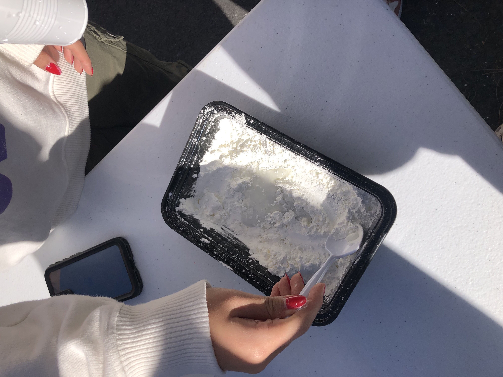
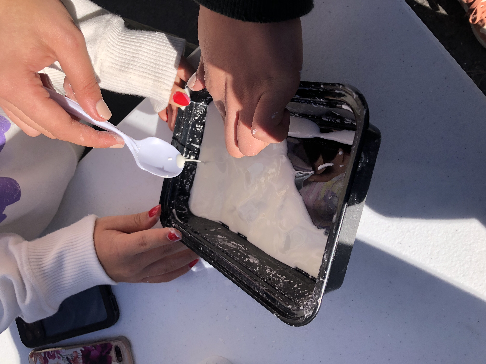
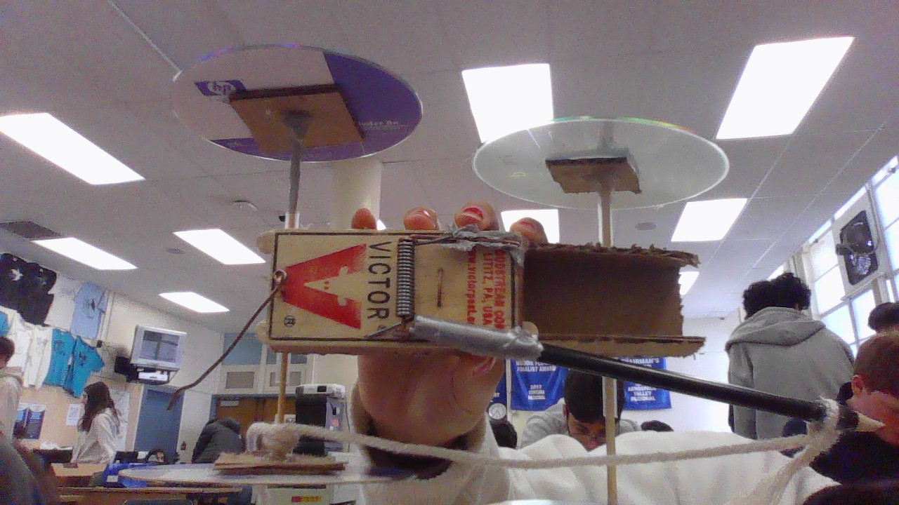
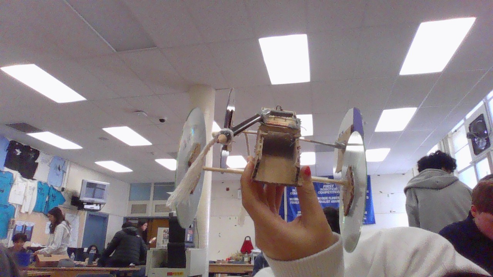

8/25/23-This is my first journal entry. We used pipes and marbles today to learn how to work together and figure out a better solution to a problem. Our team lost but we still figured out a couple tricks.
9/11/23 - This is my second journal entry. We CADed our rube golber machine and started to cut out the cardboard. I enjoyed it a lot and it was very fun to work with my team.
9/15/23-This is my third journal entry. We just finished our rube golber machines and tested it a few times. It worked nicely and is very simple. Thankfully, it worked every time that we tried it. There was a couple times when we came to a thinking block in our group but we thought about the restraints and criteria of the project and figured out a good solution to the problem.

9/29/23-This is my fourth journal entry. This week, we disected computers and learned about computer engineering. Computer engineering is a very broad engineering field and contain brnahces such as comp sci, software, and coding. From the disection, I learned the different parts of the computer and where they belong.

10/6/23- This is my fifth entry journal. This week, we made prosthetic hands to simulate what biomedical engineers do constantly. Me and my partner had to think of the contraints of the project and how the hand would pick up the bottle. We made makeshift "straws" to keep the strings in place and to bend the joints of our hand. The hand worked almost every single time and was easy to make.
10/20/23- This is my sixth journal entry. This week, we made rockets to mimick aerospace engineering. Our design was half a bottle ontop of another with fins and a tip. Unfortunately, the rocket did not go far due to the excessive weight from the top of the bottle. The first time we tried, the bottle went farther than the second because the tip was damaged during the first run of the rocket so it could fly straight. It was all right since we learned through trial and error.
10/26/23- This is my seventh journal entry. Today, we made a water filter out of bottles, rocks, sand, and cotton balls to mimic what environmental engineers have to do to filter water. After a couple of tries, me and Catherine realized that it was almost impossible to make the water clear since the yellow color could not be removed with just the materials that were listed. The water was free of sand, dirt, and grime but the yellow tint was still there. The water could not be completely clear without using special bacteria to break down the biological material in the water.
11/3/23-This is my eigth journal entry. This week, we tried to make an LED light up using batteries, wires, a resistor, and a breadboard on TinkerCad. The two outermost rows on both sides transfered energy in columns while the middle rows transfered energy horizontally. After a couple experiments, I managed to get it after rechecking that the energy was flowing in the right direction.
11/13/23-This is my ninth journal entry. This week we did many labs with a breadboard and circuits. We used a resister, wires, and an arduino to try to get the LED to light up. Me and my groupmate made sure that all our wires and currents were flowing in the right way in order for the energy to flow to the LED. We figured out easily using this way how to light up the LED.


12/1/23-This is my tenth journal entry. This week we did business engineering. Catherine and I designed a app called FindIt that locates lost items to decrease the amount of time spent finding lost objects. For example, a waterbottle may be scanned using the app and then the app will scan around to find that bottle. We presented our slides and our "app" like the show SharkTank and acted professional. Bussiness Engineering is very similar to business and not as much on the engineering side.
1/10/24
1/12/24- This is my twelth journal entry. This week, we focused on chemical engineering. We made ooblek to simulate the chemical reactions chemical engineers deal with. We needed to add the right amount of water in order for the ooblek to function corectly. We slowly added the water in order to not add too much or too lttle.
 1/29/24- Today we worked on our design and CAD for our mousetrap car. The mousetrap car helps explore the ways of mechanical engineering. We explored CADing to scale meaning having the approximate proportions of our car. I made sure that our car was the exact measurements of the our design. We wanted our car to be skinny to decrease air reisistance as well as lower the front wheels to allow it to lean forward. Also, are car is relativley small so it moves easily.
2/9/24- Today we tested our mousetrap car. We had to figure out why our car wasn't and figuered there wasn't enough tension in our ca from the string. Next iteration, we will try to make a stabler car and also put the axel in the body of the car so that the axel moves less. Our wheels are not very aligned and we should try to have nicer wheels. We should also try for a longer body to become less air resistant but that is the least of our worries. In the end, the car traveled about 14 feet, more than our origianl estimate.
 